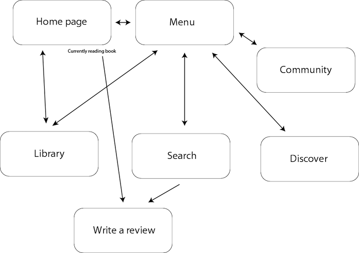

Kasey Yang
Reading App
Personal project
Role: User Experience & Interaction Designer
Purpose: I have been an avid reader since youth and have loved being in English classes throughout high school because I was able to learn so much about literature and always have a book to read. However, as I transitioned to college, I found myself reading less and less. It eventually came to the point where I didn’t even know where to start when looking for books to read, and I didn’t know what I was interested in anymore. This would be an app that allows people to leave reviews on books and rate them based on certain criteria. Either a user could enter in books that they have read and enjoyed and the app would direct them to similar books, or the user could simply go on an explore-style page and see what is popular.
Software used: Adobe Illustrator, InVision
Flow
After spending some time ideating on what I wanted the app to represent and have, I began thinking of a general flow. I knew I wanted there to be an ability to explore new books and save read books, and came up with this general diagram.

Wireframes
After creating a flow, I began making basic wireframes. The first important part is having a menu that pops out from the side, rather than a navigation bar that appears on the bottom. The reason for this is because the menu bar is supposed to be more of a helpful tool rather than tabs to switch through pages, as it would be on a social media app, for example.
The other thing I find important in designing an app is to not have too much information on display all at once. This is why there are three books per topic on each screen, and when there is a lit of books they are not in grid format. In my experiences, showing too much information can be harder on the reader and actually make it more difficult for them to find the information that they need.
Screen Mockups
One of the main issues I found with Goodreads (which is a platform I frequently use and adore) is that their site design doesn't feel modern enough to make me want to stay on it. So when designing screens for this app, I kept in mind keeping colors bright, corners round, and text modern. For this reason, I chose the font Lora as a serif used for titles, and Proxima Nova for paragraph and body text.
Prototype
I decided to prototype this app with InVision rather than Adobe XD like I had previously to gain some hands-on experience with a new program. While there were some differences, I found it overall pretty easy to learn and develop with.
The live prototype can be viewed here!
Reflection & Next Steps
This project is still a work in process. The next steps would be to get feedback from users and adjust for usability concerns. The prototype is not fully developed yet, so I will continue working on it. There are also a few accessibility aspects to consider, including whether or not buttons are visible enough and color contrast.
I learned a lot while working on this project. It was very much self-directed, so I got to explore the aspects of the design process that I am more interested in, such as wireframing. I also developed my visual design skills a lot on Illustrator — the design for this app is not typical to what I usually work on, but I got to be as creative as I wanted. Overall, I really enjoyed the process for working on this app and hope to be able to do more in the future!